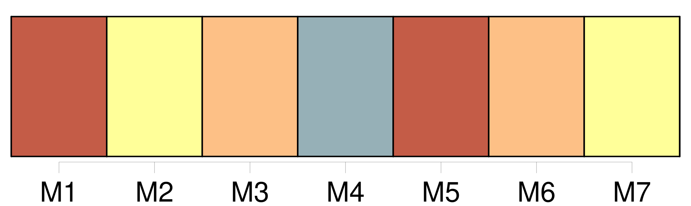

Longueur nb maillons : 76 mentions |
  |
Audoux -Douce Lumiere Audoux -Douce Lumiere 1 7-31 [5 phrases] Elle court sous les arbres, les contournant l'un après l'autre et parfois, grimpant sur l'une des grosses branches, elle reste là, perchée, à rire au nez [du chien] [qui] s'essouffle en des bonds énormes et [pleure] de ne pouvoir la rejoindre. Parfois aussi tout en courant elle se baisse pour ramasser une poignée de fleurettes qu'elle lance adroitement dans la gueule de [son compagnon] , rien que pour [le] voir éternuer, souffler, et rejeter les fleurettes, puis bondir sur elle, la renverser et la pousser du museau jusqu'à ce qu'elle soit debout pour repartir. [6 phrases] Elle ne joue plus de ce côté depuis qu'elle a vu un homme à besace s'acharner contre la serrure massive et rouillée, et cela sans s'inquiéter des aboiements furieux [du chien] qui disaient clairement que personne n'avait le droit d'entrer par là. [2 phrases]
[Le chien] , lancé pour une nouvelle course, s'arrêta net et [gronda] ; mais [il] s'apaisa vite ; [sa] petite maîtresse, comme attirée par le sourire joyeux de l'arrivant, marchait lentement à sa rencontre. — Tu es donc toute seule avec [lui] ??
demanda le jeune garçon en désignant [le chien]
— Oui, dit la petite, [il] joue avec moi et [il] n'est pas méchant.
— J'ai bien vu qu' [il] n'était pas méchant, reprit le garçon, et j'ai sauté par-dessus la grille pour venir jouer avec vous deux. Et comme si cela eût été une chose convenue depuis longtemps, les deux enfants se prirent par la main et se mirent à courir de toutes leurs forces, suivis [du chien] [qui] les dépassait, revenait en aboyant, [manquait] de les faire tomber, et [repartait] pour revenir encore. [5 phrases] Et [son chien] , comment s'appelait [-il] ?? [3 phrases] Elle s'appelait Douce et [son chien] s'appelait [Tou] [1 phrases]
Et pour s'excuser de n'être pas semblable aux autres enfants, elle ajouta très vite : Je [l'] ai trouvé dans le bois, sur la mousse.
Mère Clarisse a dit qu' [il] était tout frais naissant et qu' [il] était mon petit frère puisqu' [il] n'avait pas de parents non plus. [4 phrases] Il était aussi du village de Bléroux, et demeurait avec ses parents dans une ferme, de l'autre côté de la sapinière, une grande ferme où il y avait beaucoup de chevaux, beaucoup de vaches et beaucoup de moutons, il y avait encore trois chiens, mais c'étaient des chiens méchants qui restaient à l'attache et ne sauraient pas jouer comme [Tou]
Et depuis que Luc, son grand frère, était parti pour le régiment, il s'ennuyait à la maison où ne venaient pas de petits camarades ; mais maintenant qu'il connaissait Douce et [son chien] , il viendrait chaque jeudi jouer avec eux. [9 phrases] Noël et [Tou] menaient au contraire un vrai tapage, et le rire éclatant de Douce ne s'arrêtait guère. [1 phrases] Qui donc pourrait lui faire du mal aux côtés du garçon et [du chien] ?? [22 phrases] En les voyant s'éloigner, [Tou] , [qui] ne pouvait sauter la grille, poussa de véritables clameurs. [3 phrases] Laisse [-le] !!
[Il] saura bien nous retrouver! Et de fait, [Tou] , [qui] ne s'inquiétait pas de dénonciation, avait vite compris que, si la grille était trop haute, il [lui] restait la barrière d'entrée si souvent franchie déjà.
Et peu de temps après, la langue pendante et le souffle court, [il] rejoignait dans l'eau claire les deux autres qui barbottaient en riant comme de jeunes fous. [101 phrases] Il commença de fureter dans tous les coins, puis il entra dans toutes les pièces, suivi [du chien] tout heureux d'en faire autant. [75 phrases] Douce était toute seule avec [son chien] [13 phrases]
Et, tandis que le père range les lignes, Noël et Douce, courant et sautant, regagnent le verger où [le chien] les attend, dressé de toute [sa] hauteur contre la grille du potager. [23 phrases] Mais [Tou] , [qui] avait entendu le cri, arrivait plus vite encore.
[Il] lécha le petit menton saignant, et, se retournant vers les méchants, [il] grogna si fort contre eux qu'ils s'enfuirent tous en débandade. Le lendemain, la mère de Juliette Force vint se plaindre à Mlle Charmes que gnangnan avait fait mordre sa fille par [son chien] [3 phrases]
— Et toi, Lumière, pourquoi lances -tu [ton chien] sur tes camarades? [6 phrases] Elle a crié et [son chien] est venu. [Il] nous a fait peur, mais [il] n'a mordu personne. [53 phrases]
Elle n'avait pas osé le montrer devant son grand-père, mais, après son départ, elle s'était livrée à une danse désordonnée, à laquelle s'était mêlé [le chien] , et qui avait fait rire aux larmes mère Clarisse. [4 phrases]
Mère Clarisse recommandait : [14 phrases] Tous deux, épaule contre épaule, avec [le chien] couché par moitié sur leurs jambes, ils en oubliaient le jeu et la pêche. [69 phrases] Dans cette jeune fille à l'air sage, au visage trop mince et trop pâle, on retrouve l'enfant à la souquenille trouée qui courait pieds nus, tête nue, bras nus, avec [son chien Tou] et son camarade Noël. [33 phrases]
[Tou] , devenu vieux et patient, attend [sa] maîtresse à l'entrée du Verger et l'annonce par un aboiement qui ressemble à un rire. [14 phrases] Son travail rangé, elle quitte l'atelier et s'engage d'un pas vif dans le chemin où elle voit tout d'abord [le chien] [qui] vient à sa rencontre.
[Il] est tout frétillant de joie, [il] mordille sa robe, et elle comprend qu' [il] lui dit : [Je] l'ai vu!! [9 phrases]
»
[Il] aboie impatiemment comme s' [il] leur disait :
Et dès qu'ils se sont rejoints, [il] tourne [lui -même] et saute lourdement. [2 phrases]
[Tou] a enfin compris que l'heure est au calme, [il] se glisse entre eux dans l'espace libre et [marche] sagement. [7 phrases] Il caresse [Tou] [qui] se dresse vers lui et semble l'engager à sauter la grille. |

|
La ressource peut être téléchargée sur la page Ortolang
Si vous avez des questions ou vous voyez des erreurs, merci d'envoyer un mail à silvia.federzoni89@gmail.com
Site développé par S. Federzoni (contact)